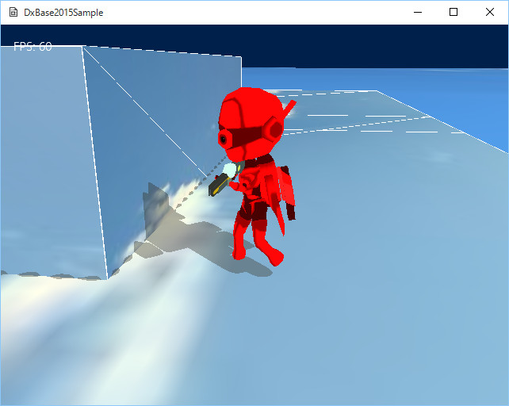
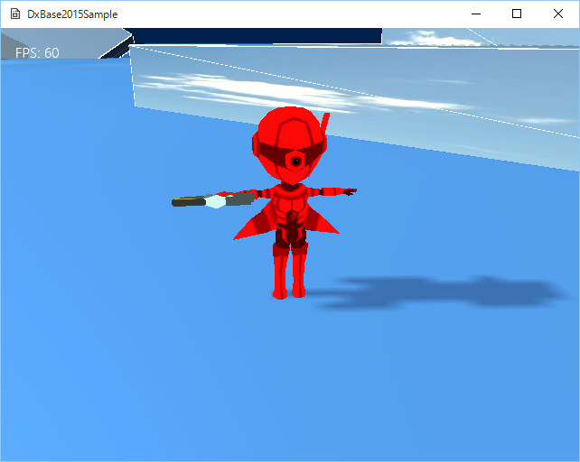

図3008a
これは、チュートリアル007のプレイヤーを、そっくりモデルメッシュに置き換えたものです。衝突判定や、ステアリング、重力コンポーネントもそのままです。
void GameStage::CreateResourses(){
//中略
//FBXメッシュファイルからFBXファイル全体のオブジェクトの作成登録
//赤いキャラ
auto DataDir = App::GetApp()->m_wstrRelativeDataPath + L"Chara_R\\";
auto PtrFbxScene = App::GetApp()->RegisterFbxScene(L"CHARA_R_FBX", DataDir, L"Chara_R.fbx");
auto PtrFbxMesh = App::GetApp()->RegisterFbxMesh(L"CHARA_R_MESH", PtrFbxScene, 0);
PtrFbxMesh->AddAnimation("wait", 5, 4, true, 10);
PtrFbxMesh->AddAnimation("walk", 13, 4, true, 10);
//青いキャラ
DataDir = App::GetApp()->m_wstrRelativeDataPath + L"Chara_B\\";
PtrFbxScene = App::GetApp()->RegisterFbxScene(L"CHARA_B_FBX", DataDir, L"Chara_B.fbx");
PtrFbxMesh = App::GetApp()->RegisterFbxMesh(L"CHARA_B_MESH", PtrFbxScene, 0);
PtrFbxMesh->AddAnimation("wait", 5, 4, true, 10);
PtrFbxMesh->AddAnimation("walk", 13, 4, true, 10);
}
//FBXメッシュファイルからFBXファイル全体のオブジェクトの作成登録
//赤いキャラ
auto DataDir = App::GetApp()->m_wstrRelativeDataPath + L"Chara_R\\";
auto PtrFbxScene = App::GetApp()->RegisterFbxScene(L"CHARA_R_FBX", DataDir, L"Chara_R.fbx");
auto PtrFbxMesh = App::GetApp()->RegisterFbxMesh(L"CHARA_R_MESH", PtrFbxScene, 0
PtrFbxMesh->AddAnimation("wait", 5, 4, true, 10);
PtrFbxMesh->AddAnimation("walk", 13, 4, true, 10);
//初期化
void Player::Create(){
//中略
//モデルの相対スケール
//モデル自体は大きいので、ステージに合わせて小さくする
Matrix4X4 CharaScale;
CharaScale.DefTransformation(
Vector3(0.01f, 0.01f, 0.01f),
Vector3(0.0f, XM_PI, 0.0f),
Vector3(0.0f, -0.5f, 0.0f)
);
//影をつける
auto ShadowPtr = AddComponent<Shadowmap>();
ShadowPtr->SetMeshResource(L"CHARA_R_MESH");
ShadowPtr->SetMeshToTransform(CharaScale);
auto PtrDraw = AddComponent<BasicFbxPNTBoneDraw>();
PtrDraw->SetMeshToTransform(CharaScale);
PtrDraw->SetFbxMeshResource(L"CHARA_R_MESH");
PtrDraw->SetCurrentAnimation("wait");
PtrDraw->SetTextureOnlyNoLight(true);
//中略
}
void Player::Update2(){
//中略
auto PtrRedit = GetComponent<Rigidbody>();
auto PtrDraw = GetComponent<BasicFbxPNTBoneDraw>();
if (PtrRedit->GetVelocity().Length() > 0.5f){
if (PtrDraw->GetCurrentAnimation() != "walk"){
PtrDraw->SetCurrentAnimation("walk");
}
}
else{
if (PtrDraw->GetCurrentAnimation() != "wait"){
PtrDraw->SetCurrentAnimation("wait");
}
}
//中略
}
１、ボーンの入っていないモデルの表示の場合 ２、ボーンは入っているが意図的にアニメーションしない場合
void Player::Create(){
//中略
auto PtrDraw = AddComponent<BasicFbxPNTDraw>();
PtrDraw->SetMeshToTransform(CharaScale);
PtrDraw->SetFbxMeshResource(L"CHARA_R_MESH");
//PtrDraw->SetCurrentAnimation("wait");
PtrDraw->SetTextureOnlyNoLight(true);
//中略
}
void Player::Update2(){
//中略
//auto PtrRedit = GetComponent<Rigidbody>();
//auto PtrDraw = GetComponent<BasicFbxPNTBoneDraw>();
//if (PtrRedit->GetVelocity().Length() > 0.5f){
// if (PtrDraw->GetCurrentAnimation() != "walk"){
// PtrDraw->SetCurrentAnimation("walk");
// }
//}
//else{
// if (PtrDraw->GetCurrentAnimation() != "wait"){
// PtrDraw->SetCurrentAnimation("wait");
// }
//}
//中略
}

図3008b
これはおなじみTポーズという、ボーンアニメーションのメッシュの基本形です。